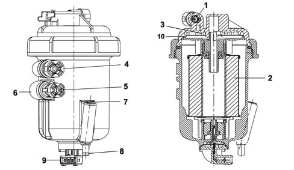

1044B fuel filters
- Path
- Descriptions > 10 ENGINE > 1044 FUEL CIRCUIT PUMP/AND DEVICES > 1044B fuel filters
- Kind
- system description
- Applies to
- engines: 1.3 JTD; all production periods
- Interactive page
- https://sloeber94.github.io/elrnDB-lYpsln/en/#/2427396
Applies to: engines: 1.3 JTD; all production periods
Fuel filter
The fuel filter is fitted in the engine bay near the bulkhead.
The filter consists of a plastic casing which contains a depth-baffle cartridge of synthetic material with high performance in terms of efficiency, duration and water separation.

1 - Diesel inlet 2 - Filter cartridge (the O-ring is supplied) 3 - Temperature sensor 4 - Diesel outlet from injection system 5 - Diesel outlet from regulation valve to tank 6 - Internal regulating valve on outlet 7 - Water bleed screw 8 - Water outlet area 9 - Water presence sensor electrical connection 10 - Diesel heater